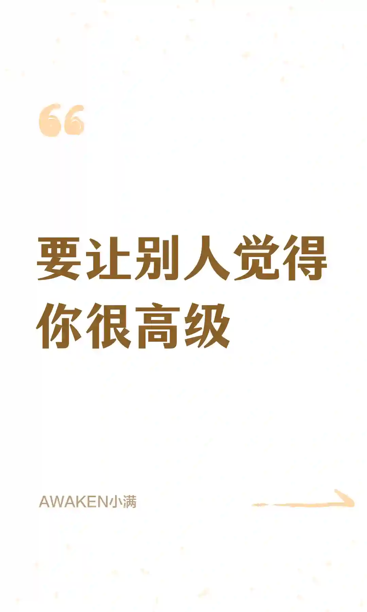
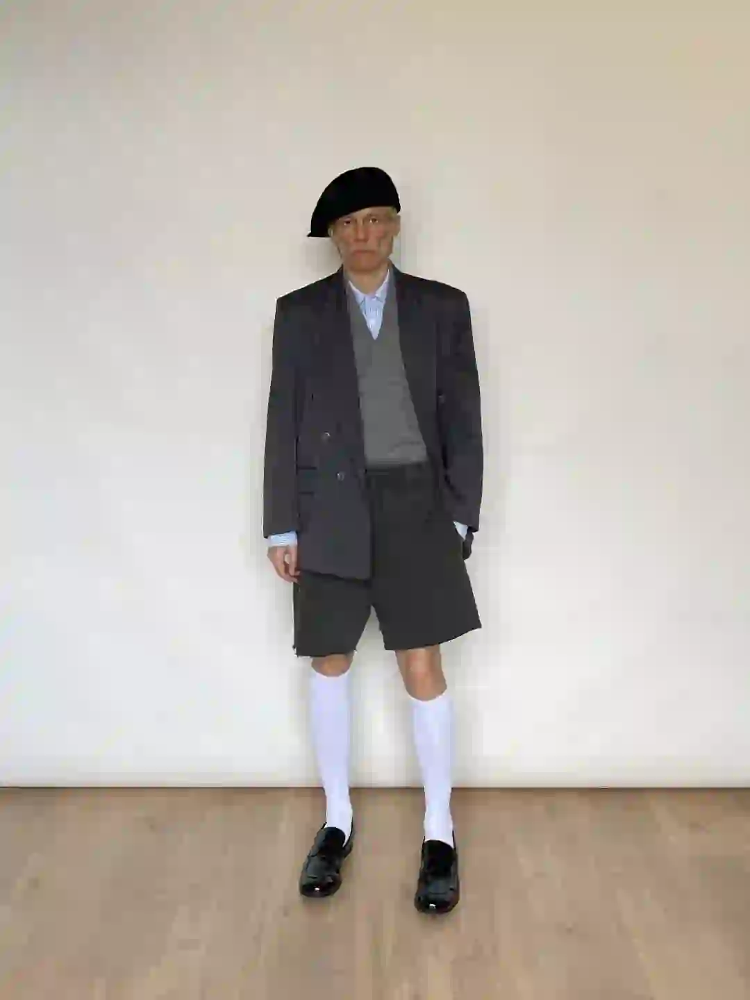
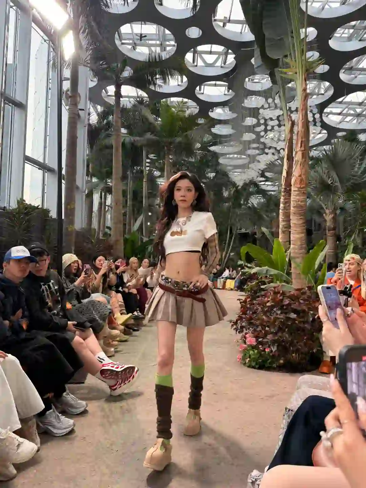
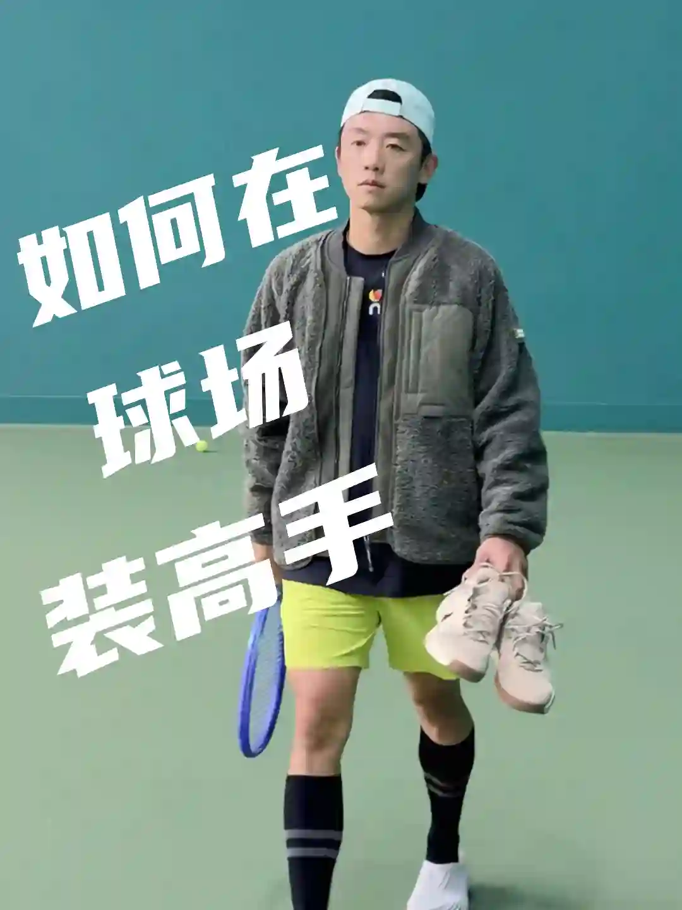

2026年3月21日
03月21日报告
生成时间：2026-03-21 · 范围：时尚 / 穿搭 / 网球
今日参考账号：zhhhhhelio[竞品] / 摄影电焊机 / Shanghai sights
今日高信号标题：街拍｜上海街头雨天的超绝氛围感 ｜ 我的2025年度街拍18图集锦 ｜ 上海秋冬男士街拍年度18图（秋冬篇）
竞品策略变化：
今日高信号标题：街拍｜上海街头雨天的超绝氛围感 ｜ 我的2025年度街拍18图集锦 ｜ 上海秋冬男士街拍年度18图（秋冬篇）
竞品策略变化：
时尚 · 01
街拍｜上海街头雨天的超绝氛围感
⭐ 2466
👍 19829
今天可学
- 内容结构：人物 + 9图，更像资料型合集
- 收藏与点赞较平衡，可学选题包装，但仍需补强可执行细节
- 评论活跃，适合加入观点冲突、对比案例或常见误区来拉讨论
- 正文入口：谁懂这一幕啊，好绝 📸 by
- 标签聚焦：#夏日穿搭 / #夏日辣妹 / #不费力工装风 / #廓系穿搭

时尚 · 02
我的2025年度街拍18图集锦
⭐ 1452
👍 9819
今天可学
- 内容结构：人物 + 18图，更像资料型合集
- 收藏与点赞较平衡，可学选题包装，但仍需补强可执行细节
- 评论活跃，适合加入观点冲突、对比案例或常见误区来拉讨论
- 标签聚焦：#上海街拍 / #Ootd / #日常穿搭 / #今天穿什么香

时尚 · 03
上海秋冬男士街拍年度18图（秋冬篇）
⭐ 609
👍 2799
今天可学
- 内容结构：人物 + 18图，更像资料型合集
- 收藏效率高，说明用户把它当成可复用模板/知识卡，不只是刷到即过
- 评论活跃，适合加入观点冲突、对比案例或常见误区来拉讨论
- 标签聚焦：#城市氛围感穿搭 / #ootd每日穿搭 / #上海街拍 / #街拍穿搭
时尚 · 04
每天认识一位摄影师DAY204Helena Georgiou
⭐ 744
👍 2096
今天可学
- 内容结构：文字卡 + 9图，更像资料型合集
- 收藏效率高，说明用户把它当成可复用模板/知识卡，不只是刷到即过
- 评论活跃，适合加入观点冲突、对比案例或常见误区来拉讨论
- 正文入口：📸 Helena Georgiou | 极简光影诗人，用黑白诉说日常的高级感！ 🌫️ 风格解码 1. 极致简约美学 以黑白摄影闻名，剥离色彩干扰，用强烈明暗对比和细腻灰度突出线条与…
- 标签聚焦：#审美提升 / #摄影审美 / #ins摄影师推荐 / #摄影审美累积

时尚 · 05
要让别人觉得你很高级
⭐ 194
👍 232
今天可学
- 内容结构：文字卡 + 4图，更像单点表达
- 收藏效率高，说明用户把它当成可复用模板/知识卡，不只是刷到即过
- 正文入口：高级感从来都不是 标签、包装、光鲜 而是一种被生活雕刻过的内在节奏 是力量感的本身#提升你的个人气质自信 #你给别人的就是你最想要的#高级感
- 标签聚焦：#提升你的个人气质自信 / #你给别人的就是你最想要的 / #高级感
时尚赛道今日方法论
- 样本依据：上海秋冬男士街拍年度18图（秋冬篇） / 每天认识一位摄影师DAY204Helena Georgiou
- 当天结构信号：人物封面 + 9图 最强；优先学习样本 3 条，低收藏流量样本 0 条。
- 时尚赛道今天跑出来的是“审美判断 + 资料感整理”：像 要让别人觉得你很高级 这类高收藏样本，核心不是讲步骤，而是把趋势、风格线索和案例并排给足，用户才愿意以 83.6% 的收藏率反复回看。
- 执行建议：标题先抛出趋势/风格判断，再给明确收益；正文少讲空泛氛围，多给风格标签、对照案例和可复看的视觉结论，让内容更像灵感资料卡。
今日参考账号：林小花 / Aeec / ASHLEYASS
今日高信号标题：2025年度穿搭合集✨做自己的美丽主理人 ｜ 穿搭与年龄无关 ｜ 一周穿搭
竞品策略变化：未命中监控竞品样本
今日高信号标题：2025年度穿搭合集✨做自己的美丽主理人 ｜ 穿搭与年龄无关 ｜ 一周穿搭
竞品策略变化：未命中监控竞品样本
穿搭 · 01
2025年度穿搭合集✨做自己的美丽主理人
⭐ 1588
👍 8216
今天可学
- 内容结构：文字卡 + 0图，更像单点表达
- 收藏与点赞较平衡，可学选题包装，但仍需补强可执行细节
- 评论活跃，适合加入观点冲突、对比案例或常见误区来拉讨论
- 正文入口：（正文为空或未取到）

穿搭 · 02
穿搭与年龄无关
⭐ 1917
👍 5387
今天可学
- 内容结构：人物 + 4图，更像单点表达
- 收藏效率高，说明用户把它当成可复用模板/知识卡，不只是刷到即过
- 评论活跃，适合加入观点冲突、对比案例或常见误区来拉讨论
- 标签聚焦：#一周穿搭 / #lifestylevision / #穿搭灵感 / #廓系穿搭
穿搭 · 03
一周穿搭
⭐ 942
👍 3094
今天可学
- 内容结构：人物 + 0图，更像单点表达
- 收藏效率高，说明用户把它当成可复用模板/知识卡，不只是刷到即过
- 正文入口：（正文为空或未取到）

穿搭 · 04
🌵来看辣妹们走秀～宋妍霏这腰绝了！
⭐ 518
👍 4716
今天可学
- 内容结构：产品 + 9图，更像资料型合集
- 收藏与点赞较平衡，可学选题包装，但仍需补强可执行细节
- 正文入口：宋妍霏这身look真不错，蔡文静好美啊！ 这双鞋让我顺利跻身180行列了，稳稳当当儿的。
- 标签聚焦：#每日穿搭 / #ootd每日穿搭 / #秀场直击 / #宋妍霏
穿搭 · 05
黑白灰通勤直接杀疯｜优衣库纯纯Lemaire平替
⭐ 796
👍 1117
今天可学
- 内容结构：未判定 + 0图，更像单点表达
- 收藏效率高，说明用户把它当成可复用模板/知识卡，不只是刷到即过
- 正文入口：（正文为空或未取到）
穿搭赛道今日方法论
- 样本依据：穿搭与年龄无关 / 一周穿搭
- 当天结构信号：人物封面 + 0图 最强；优先学习样本 3 条，低收藏流量样本 0 条。
- 穿搭赛道今天最有效的是“整套可抄作业方案”：高收藏样本 黑白灰通勤直接杀疯｜优衣库纯纯Lemaire平替 说明，只要场景清楚、look 数量够多、搭配结果一眼能看懂，就更容易拿到 71.3% 级别的收藏反馈。
- 执行建议：优先做通勤/职业/一周不重样/套装盘点这类清单式内容；封面先给完整上身结果，图组里再拆单品变化和搭配理由，不要只发单套氛围图。
今日参考账号：郑恺 / 网球gogogo / 黑胡子魔法师
今日高信号标题：网球标准：德约科维奇-正手慢动作分析！ ｜ 5.0定点直线｜快点！快点！在快点！🎾 ｜ attack tennis 🎾
竞品策略变化：未命中监控竞品样本
今日高信号标题：网球标准：德约科维奇-正手慢动作分析！ ｜ 5.0定点直线｜快点！快点！在快点！🎾 ｜ attack tennis 🎾
竞品策略变化：未命中监控竞品样本

网球 · 01
未命名笔记
⭐ 54609
👍 421114
今天可学
- 内容结构：视频封面 + 视频，更像视频示范/单点表达
- 这条流量带有明显外部加成，只拆内容结构与包装，不原样复制流量来源
- 正文入口：干货！如何在球场装高手 #我的星年仪式感 #我的新年马精神 #明星不止AB面 #网球尖子生 #小郑青年的网球日记
- 标签聚焦：#我的星年仪式感 / #我的新年马精神 / #明星不止AB面 / #网球尖子生

网球 · 02
网球标准：德约科维奇-正手慢动作分析！
⭐ 6367
👍 7323
今天可学
- 内容结构：视频封面 + 视频，更像视频示范/单点表达
- 这条流量带有明显外部加成，只拆内容结构与包装，不原样复制流量来源
- 正文入口：最适合业余选手学习的网球动作~#网球 #网球教学 #德约科维奇 #国庆节 #WTT中国大满贯 #网球中国赛季来了 #上海大师赛 #球类运动日常 #打球 #人生的意义
- 标签聚焦：#网球 / #网球教学 / #德约科维奇 / #国庆节
网球 · 03
5.0定点直线｜快点！快点！在快点！🎾
⭐ 1106
👍 4578
今天可学
- 内容结构：未判定 + 0图，更像单点表达
- 收藏效率高，说明用户把它当成可复用模板/知识卡，不只是刷到即过
- 评论活跃，适合加入观点冲突、对比案例或常见误区来拉讨论
- 正文入口：（正文为空或未取到）

网球 · 04
attack tennis 🎾
⭐ 936
👍 4325
今天可学
- 内容结构：视频封面 + 视频，更像视频示范/单点表达
- 收藏效率高，说明用户把它当成可复用模板/知识卡，不只是刷到即过
- 标签聚焦：#tennis / #rf / #テニス / #网球

网球 · 05
秋季多巴胺/简单好看的6套网球入秋穿搭
⭐ 944
👍 1442
今天可学
- 内容结构：视频封面 + 视频，更像视频示范/单点表达
- 收藏效率高，说明用户把它当成可复用模板/知识卡，不只是刷到即过
- 评论活跃，适合加入观点冲突、对比案例或常见误区来拉讨论
- 正文入口：-秋冬保持轻巧不臃肿 一件外套搭配 可穿可脱更有层次感！ 👕Kswiss 卢布列夫 🩳Kswiss 卢布列夫 👟Nike Court Zoom NEX 🎾Head Extreme …
- 标签聚焦：#网球穿搭ootd / #网球穿搭 / #ootd每日穿搭 / #男士穿搭
网球赛道今日方法论
- 样本依据：5.0定点直线｜快点！快点！在快点！🎾 / attack tennis 🎾
- 当天结构信号：视频封面封面 + 视频 最强；优先学习样本 3 条，低收藏流量样本 0 条。
- 网球赛道今天胜出的不是热闹球场感，而是“动作纠错/装备收益/新手可执行”：高收藏样本 秋季多巴胺/简单好看的6套网球入秋穿搭 证明，只要用户能马上拿去练，收藏率就能来到 65.5%。
- 执行建议：标题写清动作部位、错误修正或装备收益；内容里给慢动作、步骤和上场场景。明星/赛事样本只借包装，不把热点本身当方法论。
- 风险提醒：未命名 已标记为 [不可复制]，只拆结构，不作为明日选题原样跟进。
- 自动抽取规则：仅收录收藏率 >20% 且未被标记为 [不可复制] 的标题模板
- 写入目标：/Users/zhangxiaosong/shared/context/xhs-knowledge/topics/title-templates.md
- 把今天高收藏、高可复制的打法优先塞进明日发帖计划
- 竞品若连续两天从展示型转向教程/资料型，单独开策略变更记录
- 对被标注 [不可复制] 的样本，只拆结构，不抄流量来源